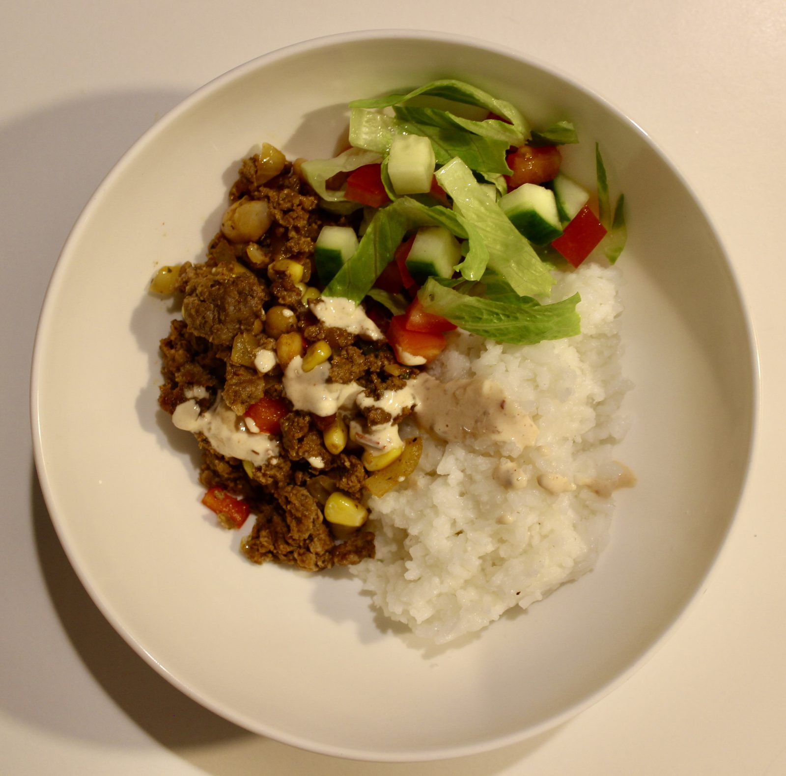

Seared beef mince with capsicum, garlic and a simple spice blend, stirred through with black beans and corn for a proper burrito-bowl base.
Served over rice with a fresh lettuce, cucumber and tomato salad, and finished with a smoky, creamy chipotle sauce — Greek yoghurt and a little mayo mixed with chipotles in adobo.
Quick enough for a weeknight, and the mince mixture holds up well if you want to make a double batch for meal prep.

4 servings
25–30 mins • High Protein • Base: 4 servings
Beef mince and black beans bring a strong protein and iron combination, corn and fresh vegetables add fibre and vitamin C, and swapping most of the mayo for Greek yoghurt keeps the sauce creamy with a lot less fat.